此报告不自动判定通过。先核对数据、状态、主题与缩放，再审阅布局和像素差异；相似度不能代替交互测试。
macOS 左 / Linux 右 · 变化像素 27.17% · 需逐项审阅
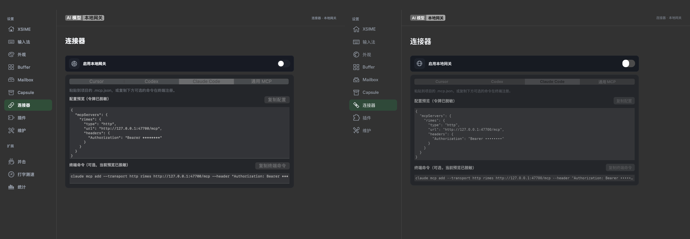
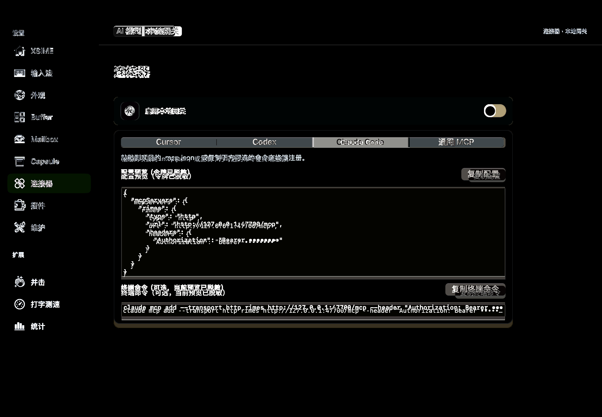
macOS 左 / Linux 右 · 变化像素 23.62% · 需逐项审阅
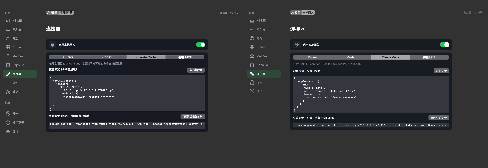
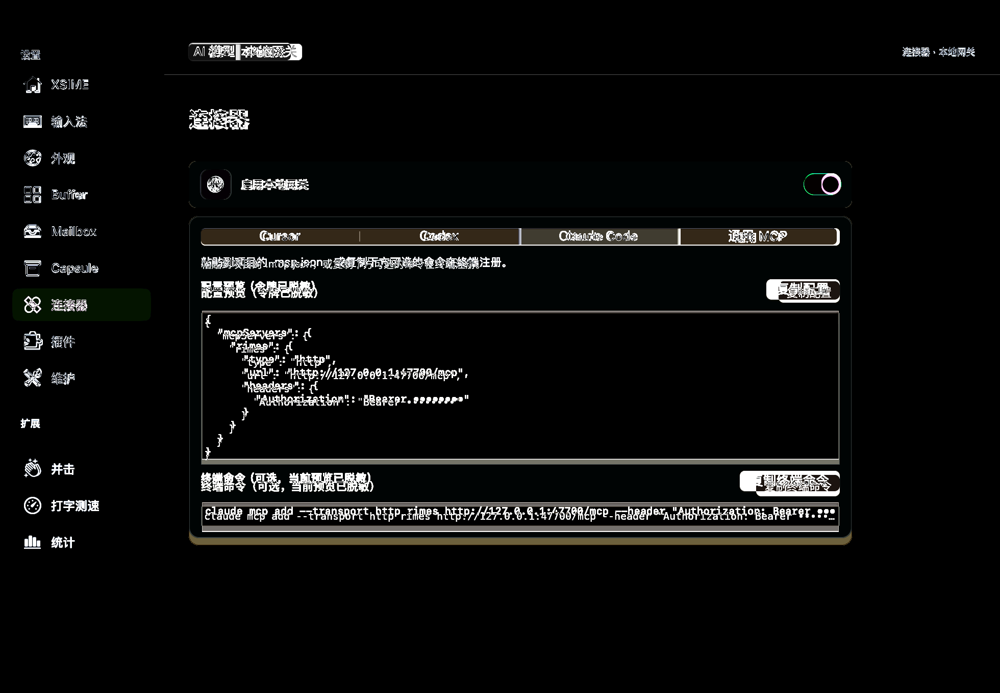
macOS 左 / Linux 右 · 变化像素 17.89% · 需逐项审阅
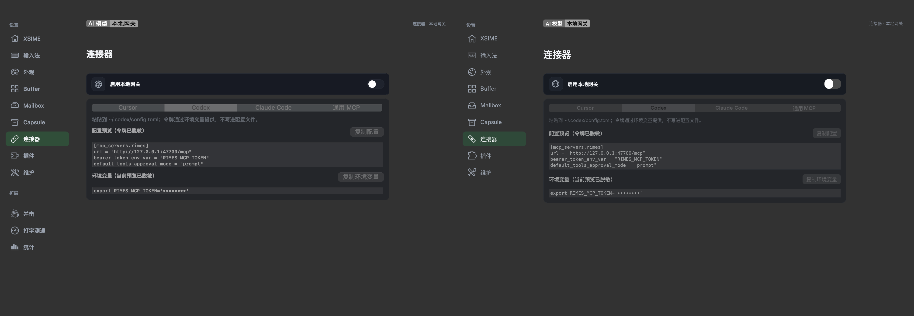
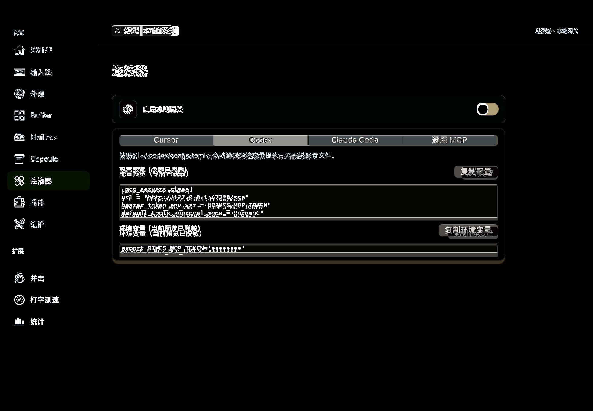
macOS 左 / Linux 右 · 变化像素 23.01% · 需逐项审阅
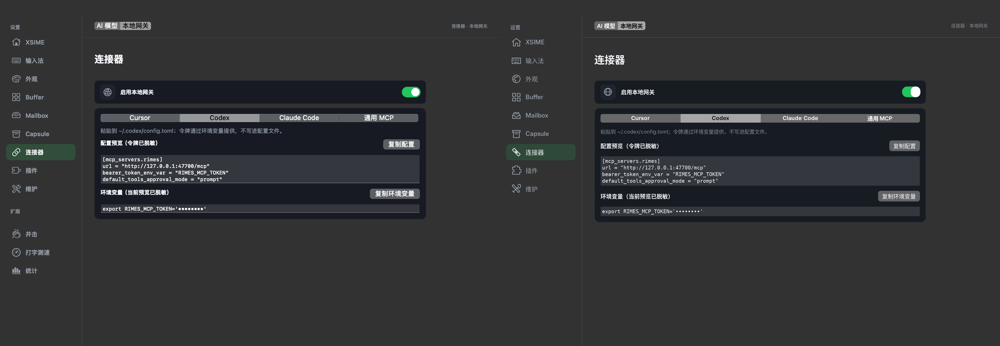
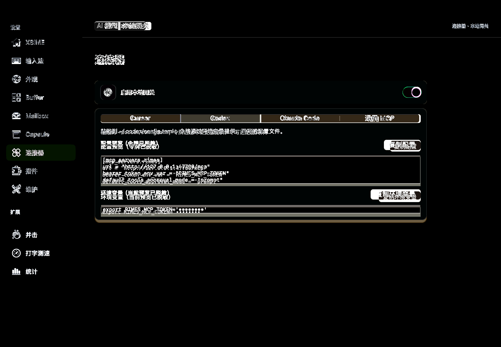
macOS 左 / Linux 右 · 变化像素 23.38% · 需逐项审阅
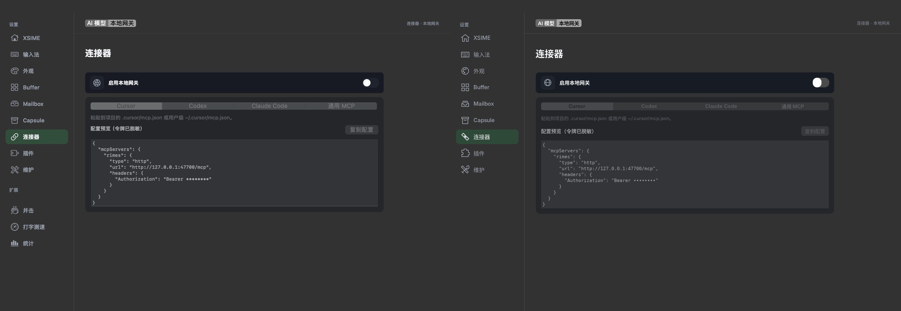
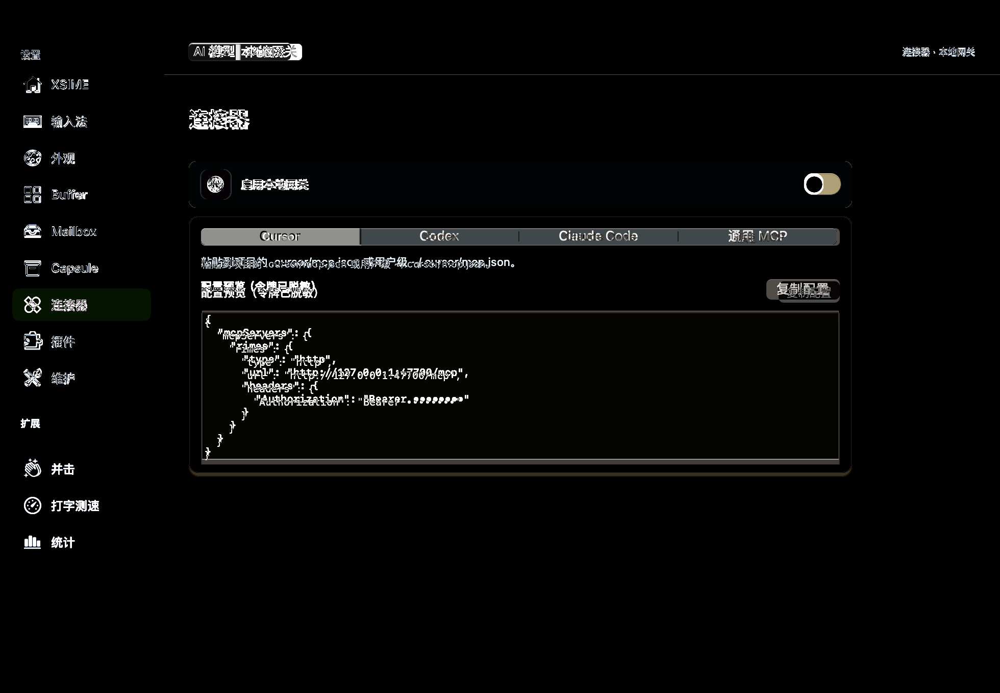
macOS 左 / Linux 右 · 变化像素 18.27% · 需逐项审阅
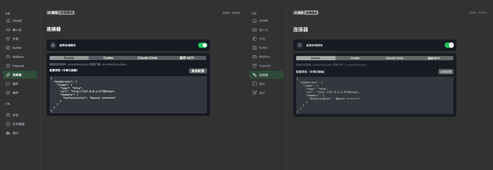
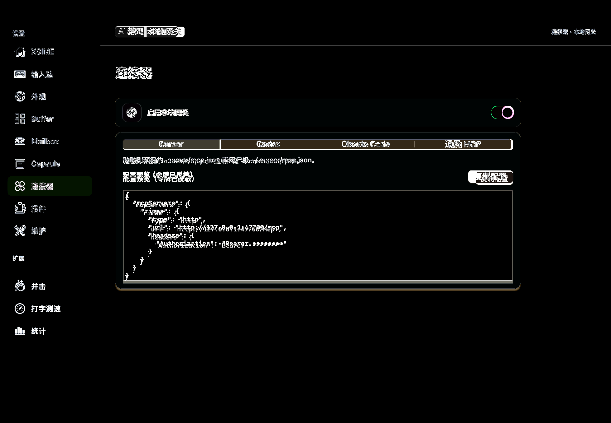
macOS 左 / Linux 右 · 变化像素 23.38% · 需逐项审阅
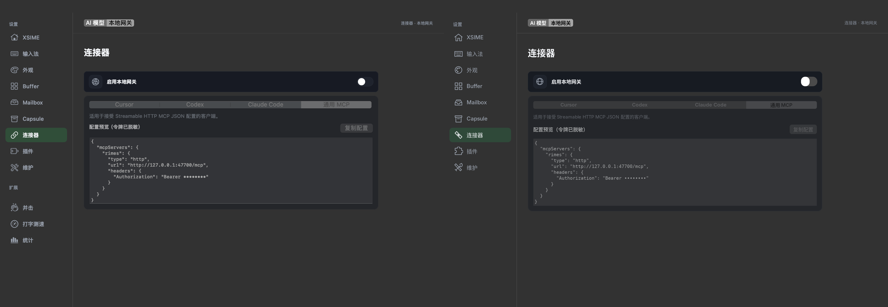
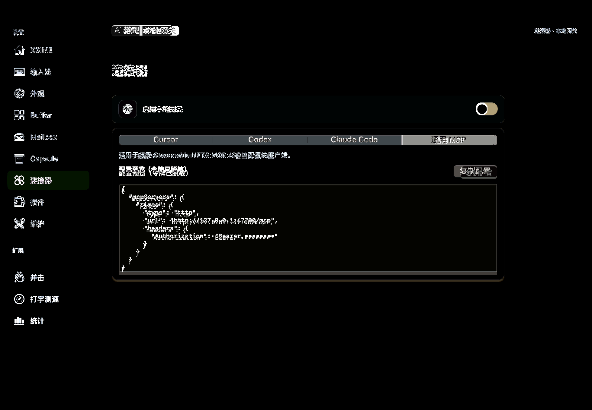
macOS 左 / Linux 右 · 变化像素 18.27% · 需逐项审阅
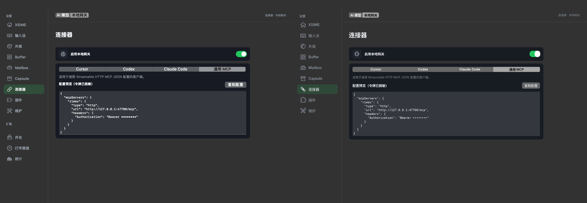
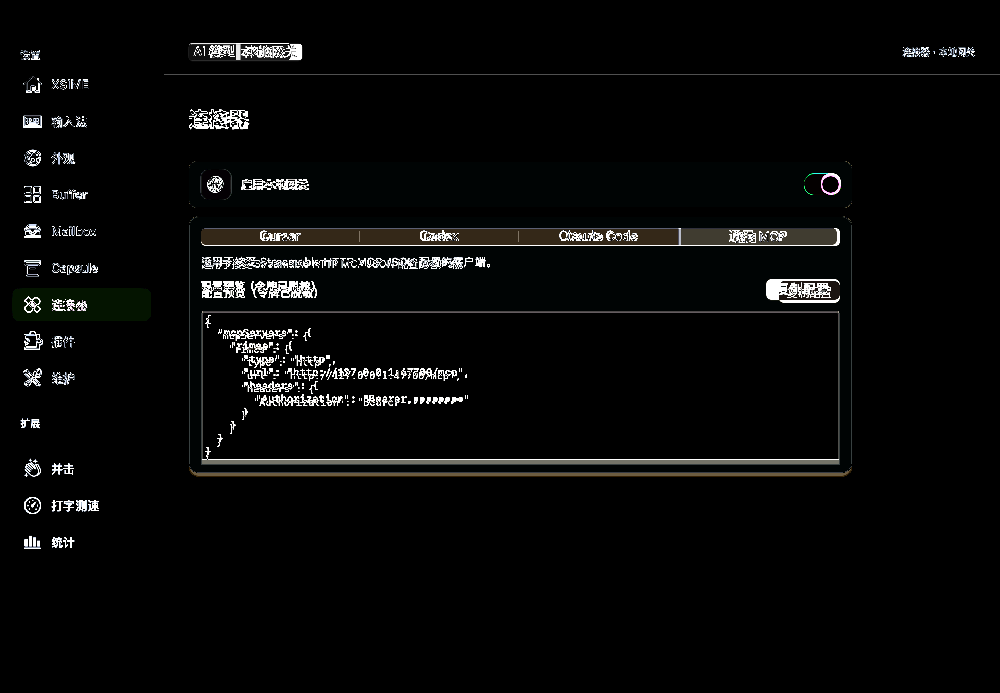